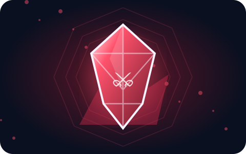
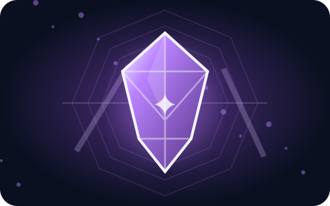
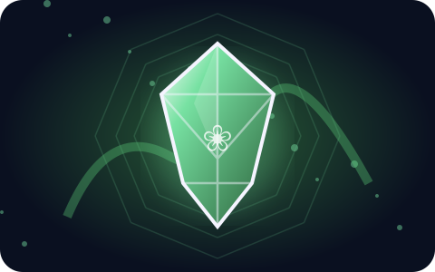
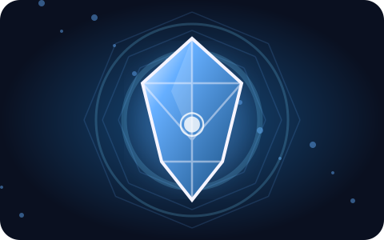
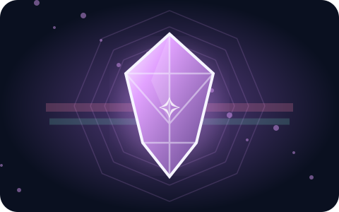

Choose your power
Each gem has a distinct playstyle, five unlock tiers, and its own ascension. Select a gem to explore its abilities.

🔴 Rupture
Damage · heart theft · execution pressure
Rupture is the offensive gem. It focuses on true damage, bleeding pressure, temporary heart theft, and finishing marked targets.
View all tiers →
🔵 Current
Wind · speed · aerial control
Current is the movement gem. It uses wind walls, knockback control, speed bursts, and aerial slams.
View all tiers →
🟣 Mirage
Stealth · invisibility · decoy NPCs
Mirage begins as a stealth gem and becomes an illusion gem. NPC clones appear only at higher tiers.
View all tiers →
🟢 Grove
Fortune · nature control · terrain magic
Grove combines survival economy, disorienting floral traps, and heavy terrain control.
View all tiers →
🟡 Hourglass
Time control · recall · stagger
Hourglass manipulates time for repositioning, mitigation, and controlled stuns.
View all tiers →
🔷 Echo
Sound · bats · Warden ally
Echo uses sound tracking, bat synergies, sonic blasts, and eventually an allied Warden.
View all tiers →
🟠 Anchor
Durability · gravity · rocket mace
Anchor is the equipment and gravity gem, ending with a high-mobility mace ascension.
View all tiers →
🌈 Prism
Lightning · frost · fire · summons
Prism is a chaotic elemental gem combining lightning procs, freezing, explosive mobility, and golem support.
View all tiers →